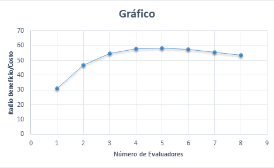

Problemas Encontrados (i) = N (1 - (1-l) i)
Se asume que N es igual a 100 y que l es igual a 34%
(i) = 100(1 -1* (1-0,34)^i )*$10.000 = Beneficio -> Beneficio/Costo = Radio Beneficio/Costo
(1)=100*(1-1*(1-0,34) ^1)*10000=340000 -> 340000/(10000+1000)=30,90
(2)=100*(1-1*(1-0,34) ^2)*10000=564400 -> 564400/(10000+2000)=47,03
(3)=100*(1-1*(1-0,34) ^3)*10000=712504 -> 712504/(10000+3000)=54,80
(4)=100*(1-1*(1-0,34) ^4)*10000=810252,64 -> 810252,64/(10000+4000)=57,87
(5)=100*(1-1*(1-0,34) ^5)*10000=874766,74 -> 874766,74/(10000+5000)=58,31
(6)=100*(1-1*(1-0,34) ^6)*10000=917346,04 -> 917346,04/(10000+6000)=57,33
(7)=100*(1-1*(1-0,34) ^7)*10000=945448,39 -> 945448,39/(10000+7000)=55,61
(8)=100*(1-1*(1-0,34) ^8)*10000=945448,39 -> 963995,93/(10000+8000)=53,55
Por lo tanto el número de expertos que generarían el mayor radio beneficio-costo es de i=5.